Richard Waterman
September 2026
import os
import numpy as np
np.set_printoptions(precision=5, suppress=True)
import pandas as pd
import matplotlib.pyplot as plt
import seaborn as sns
import statsmodels.api as sm # This is the statistical modeling library we will use.
import warnings
warnings.filterwarnings('ignore')
sns.set(rc={'figure.figsize':(4.5,3.18)}) # A default plot size for axes level plots.
os.chdir('C:\\Users\\water\\Dropbox (Penn)\\Richard\\Teaching\\4770f2025_Q1\\DataSets')
prsm_data = pd.read_csv("PRSM_data.csv", index_col=0)
prsm_data.columnsIndex(['PRSM', 'Amt.Repaid.at.6.Months', 'Nominal.Loan.Amount',
'Total.Amt.to.be.Repaid', 'Repayment.Percentage', 'Commission.Upfront',
'Validated.Monthly.Batch', 'Historical.Monthly.Credit.Card.Receipts',
'Months.of.History', 'Loan.Type', 'FICO', 'Years.In.Business',
'Num.of.Credit.Lines', 'Satisfied.Accounts',
'Num.of.Paid.off.Credit.Lines', 'Current.Delinquent.Credit.Lines',
'Previous.Delinquent.Credit.Lines', 'Business.Entity.Type',
'Years.in.File', 'Num.of.Legal.Items', 'Num.of.Trade.Lines',
'Num.of.Derog.Legal.Item', 'Two.Digit.SIC.Code',
'Two.Digit.SIC.Description', 'Population.in.Zip.Code',
'Male.Population.in.Zip.Code', 'Female.Population.in.Zip.Code',
'Average.House.Value.in.Zip.Code', 'Income.Per.Household.in.Zip....',
'Median.Age.in.Zip.Code', 'Time.Zone', 'Bus.Establishments.in.Zip.Code',
'Employment.in.Zip.Code', 'Annual.Payroll.in.Zip.Code',
'PO.Residential.Count.in.Zip', 'PO.Business.Count.in.Zip',
'Delivery.Total', 'State', 'ISO.Name', 'Loan.Size.Class'],
dtype='object')sns.catplot(x='Loan.Type', y="FICO", kind="box", hue='Loan.Type', data=prsm_data, height=3, aspect=2); # The comparison boxplots
pass
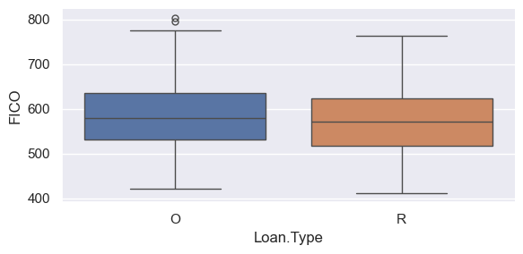
Loan.Type
O 582.847892
R 571.373134
Name: FICO, dtype: float64# The two-sample t-test not assuming unequal variances.
# Extract the two columns of interest.
X1 = sm.stats.DescrStatsW(prsm_data['FICO'].loc[prsm_data['Loan.Type']=="O" ])
X2 = sm.stats.DescrStatsW(prsm_data['FICO'].loc[prsm_data['Loan.Type']=="R" ])
comp_means = sm.stats.CompareMeans(X1, X2)
print(comp_means.summary(usevar='unequal')) Test for equality of means
==============================================================================
coef std err t P>|t| [0.025 0.975]
------------------------------------------------------------------------------
subset #1 11.4748 4.726 2.428 0.015 2.195 20.754
==============================================================================
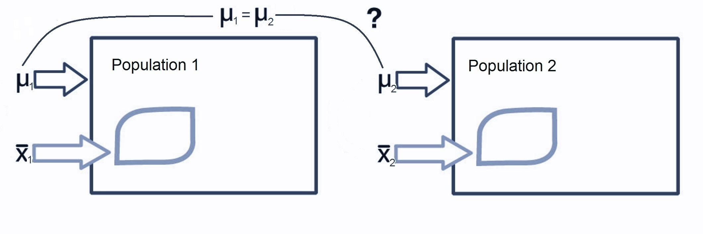
\[ H_0: \mu_1 - \mu_2=0 \qquad v. \qquad H_1: \mu_1 - \mu_2 \ne 0\]
| coef | std err | t | P>|t| | [0.025] | ||
|---|---|---|---|---|---|---|
| subset #1 | 11.4748 | 4.726 | 2.428 | 0.015 | 2.195 | 20.754 |
# The two-sample t-test not assuming unequal variances.
# Extract the two columns of interest.
X1 = sm.stats.DescrStatsW(prsm_data['FICO'].loc[prsm_data['Loan.Type']=="O" ])
X2 = sm.stats.DescrStatsW(prsm_data['FICO'].loc[prsm_data['Loan.Type']=="R" ])
comp_means = sm.stats.CompareMeans(X1, X2)
print(comp_means.summary(usevar='unequal')) Test for equality of means
==============================================================================
coef std err t P>|t| [0.025 0.975]
------------------------------------------------------------------------------
subset #1 11.4748 4.726 2.428 0.015 2.195 20.754
============================================================================== Valuation Square feet
0 311 1544
1 293 1470
2 311 1650
3 333 1843
4 294 1565
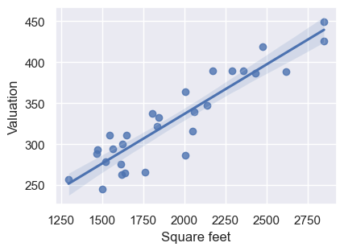
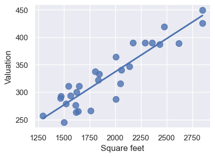
sns.regplot(x="Square feet", y="Valuation", order=4, data=house_data, ci=None, scatter_kws={"s": 75});
pass
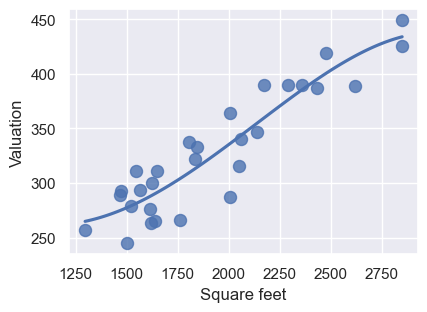
sns.regplot(x="Square feet", y="Valuation", robust=True, data=house_data, ci=95, scatter_kws={"s": 75});
pass
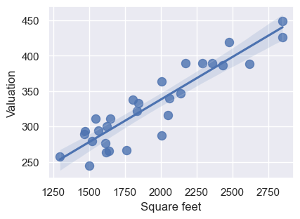
sns.regplot(x="Square feet", y="Valuation", data=house_data, ci=None, lowess=True, scatter_kws={"s": 75});
pass
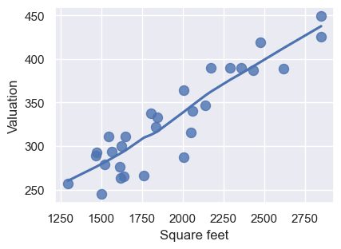
sns.residplot(x="Square feet", y="Valuation", data=house_data, lowess=True, scatter_kws={"s": 75});
pass
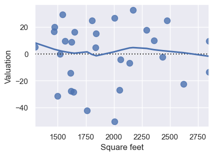
race_data = pd.read_csv("Run5K.csv")
race_data['Finish_Time'] = race_data['Time_mins'] + race_data['Time_secs']/60 # Calculate the actual race time.
sns.lmplot(x="AGE", y="Finish_Time", hue="SEX", data=race_data, height=4, aspect=2);
pass
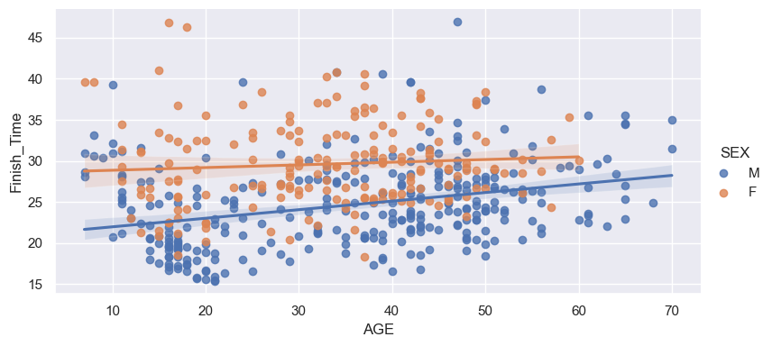
sns.lmplot(x="AGE", y="Finish_Time", hue="SEX", data=race_data, markers=["o", "x"],
palette="Set1",scatter_kws={'alpha':0.7}, line_kws={'alpha':0.9} ,height=4, aspect=2);
pass
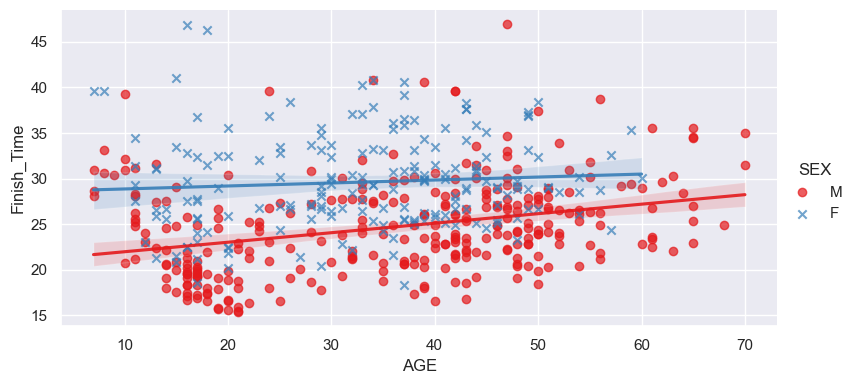
sns.lmplot(x="AGE", y="Finish_Time", hue="SEX", data=race_data, height=4, aspect=2, markers=["o", "x"], palette="Set1",
scatter_kws={'alpha':1.0}, line_kws={'alpha':1, 'linestyle':'dashed', 'linewidth':4},
logx=True);
pass
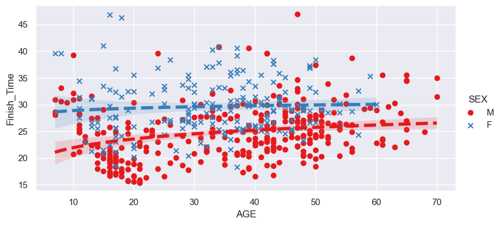
sns.lmplot(x="AGE", y="Finish_Time", hue="SEX", data=race_data, height=4, aspect=2, markers=["o", "x"], palette="Set1",
scatter_kws={'alpha':0.7}, lowess=True);
pass
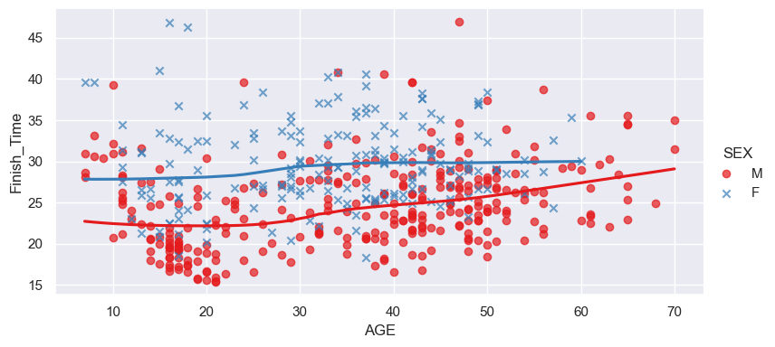
sns.lmplot(x="AGE", y="Finish_Time", col="SEX", data=race_data, palette="Set1",
lowess=True, height=6, aspect=2);
pass
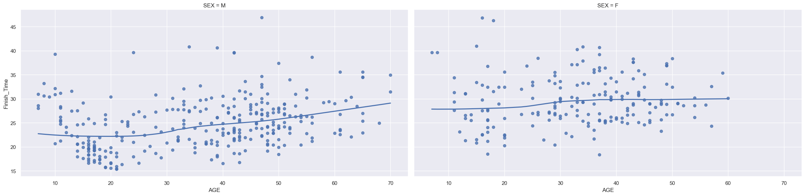
op_data = pd.read_csv("Outpatient.csv", parse_dates=['SchedDate', 'ApptDate'])
op_data['ScheduleLag'] = op_data['ApptDate'] - op_data['SchedDate']
op_data['SL'] = op_data['ScheduleLag'].dt.days # Create a new variable that has schedule lag in days.
# Create a dichotomous Status variable.
op_subset = op_data.loc[(op_data['Status'] == "Arrived") | (op_data['Status'] == "No Show")]
op_subset['Status'].value_counts()
# Create a 0/1 version of the variable with the 'get_dummies' function.
op_subset.insert(op_subset.shape[1], 'BinaryStatus', pd.get_dummies(op_subset["Status"], drop_first=True))
print(op_subset.head(4))
# Drop the gross outlier (371 days)
op_subset = op_subset[op_subset['SL'] < 250] PID SchedDate ApptDate Dept Language Sex Age \
0 P10092 2012-07-27 2012-10-05 DERM ENGLISH F 80+
2 P10962 2012-02-02 2012-02-10 OTOLARYNGOLOGY ENGLISH M 12
4 P10320 2012-10-25 2012-12-11 NEPHROLOGY SPANISH F 45
6 P10410 2013-10-31 2013-11-03 ORTHOPAEDICS ENGLISH M 54
Race Status ScheduleLag SL BinaryStatus
0 AFRICAN AMERICAN Arrived 70 days 70 False
2 AFRICAN AMERICAN Arrived 8 days 8 False
4 HISPANIC No Show 47 days 47 True
6 AFRICAN AMERICAN No Show 3 days 3 True
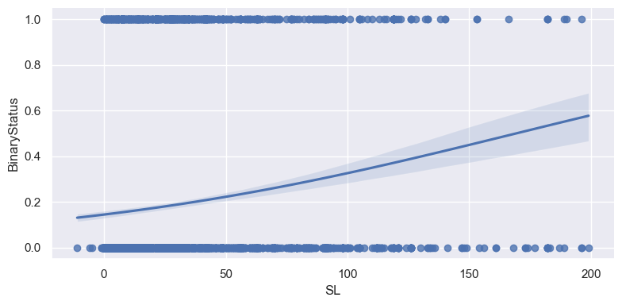
sns.lmplot(x="SL", y="BinaryStatus", data=op_subset, hue='Sex', logistic=True, height=4, aspect=2);
pass
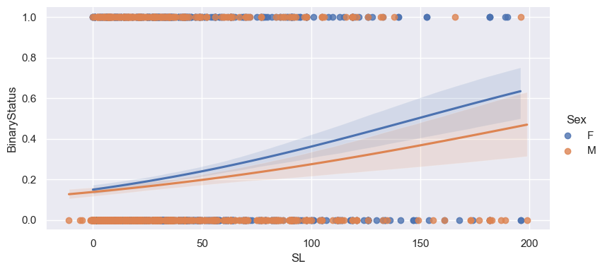
interactive(children=(Dropdown(description='name', options=('Greys', 'Reds', 'Greens', 'Blues', 'Oranges', 'Pu…
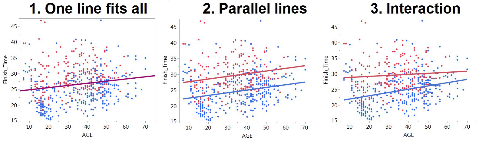
formula='Finish_Time ~ AGE'
import statsmodels.formula.api as smf
olsmod1 = smf.ols(formula='Finish_Time ~ AGE', data=race_data) # Define the model.
olsres1 = olsmod1.fit() # Fit the model.
print(olsres1.summary()) # View the results. OLS Regression Results
==============================================================================
Dep. Variable: Finish_Time R-squared: 0.030
Model: OLS Adj. R-squared: 0.028
Method: Least Squares F-statistic: 15.53
Date: Tue, 22 Sep 2026 Prob (F-statistic): 9.28e-05
Time: 13:31:56 Log-Likelihood: -1579.4
No. Observations: 501 AIC: 3163.
Df Residuals: 499 BIC: 3171.
Df Model: 1
Covariance Type: nonrobust
==============================================================================
coef std err t P>|t| [0.025 0.975]
------------------------------------------------------------------------------
Intercept 24.1633 0.656 36.812 0.000 22.874 25.453
AGE 0.0688 0.017 3.941 0.000 0.035 0.103
==============================================================================
Omnibus: 36.943 Durbin-Watson: 0.056
Prob(Omnibus): 0.000 Jarque-Bera (JB): 43.207
Skew: 0.678 Prob(JB): 4.15e-10
Kurtosis: 3.483 Cond. No. 97.4
==============================================================================
Notes:
[1] Standard Errors assume that the covariance matrix of the errors is correctly specified.Xnew = pd.DataFrame({'AGE': [32,43,16]}) # Create new data to predict at.
yprednew = olsres1.predict(Xnew)
print(yprednew)0 26.366174
1 27.123395
2 25.264760
dtype: float64 F M
0 False True
1 False True
2 False True
3 False True
4 False True
.. ... ...
496 False True
497 True False
498 True False
499 True False
500 False True
[501 rows x 2 columns]
formula='Finish_Time ~ AGE + SEX'
olsmod2 = smf.ols(formula='Finish_Time ~ AGE + SEX', data=race_data) # Specify model.
olsres2 = olsmod2.fit() # Fit model.
print(olsres2.summary()) # Summarize model. OLS Regression Results
==============================================================================
Dep. Variable: Finish_Time R-squared: 0.221
Model: OLS Adj. R-squared: 0.217
Method: Least Squares F-statistic: 70.45
Date: Tue, 22 Sep 2026 Prob (F-statistic): 1.14e-27
Time: 13:31:56 Log-Likelihood: -1524.7
No. Observations: 501 AIC: 3055.
Df Residuals: 498 BIC: 3068.
Df Model: 2
Covariance Type: nonrobust
==============================================================================
coef std err t P>|t| [0.025 0.975]
------------------------------------------------------------------------------
Intercept 26.8253 0.637 42.139 0.000 25.575 28.076
SEX[T.M] -5.1852 0.470 -11.028 0.000 -6.109 -4.261
AGE 0.0846 0.016 5.375 0.000 0.054 0.116
==============================================================================
Omnibus: 61.186 Durbin-Watson: 0.402
Prob(Omnibus): 0.000 Jarque-Bera (JB): 85.001
Skew: 0.864 Prob(JB): 3.49e-19
Kurtosis: 4.041 Cond. No. 112.
==============================================================================
Notes:
[1] Standard Errors assume that the covariance matrix of the errors is correctly specified.
Finish_Time ~ AGE + SEX + AGE:SEX
olsmod3 = smf.ols(formula='Finish_Time ~ AGE + SEX + AGE:SEX', data=race_data) # Specify model.
olsres3 = olsmod3.fit() # Fit model.
print(olsres3.summary()) # Summarize model. OLS Regression Results
==============================================================================
Dep. Variable: Finish_Time R-squared: 0.227
Model: OLS Adj. R-squared: 0.222
Method: Least Squares F-statistic: 48.65
Date: Tue, 22 Sep 2026 Prob (F-statistic): 1.39e-27
Time: 13:31:56 Log-Likelihood: -1522.6
No. Observations: 501 AIC: 3053.
Df Residuals: 497 BIC: 3070.
Df Model: 3
Covariance Type: nonrobust
================================================================================
coef std err t P>|t| [0.025 0.975]
--------------------------------------------------------------------------------
Intercept 28.5391 1.053 27.110 0.000 26.471 30.607
SEX[T.M] -7.6032 1.274 -5.966 0.000 -10.107 -5.099
AGE 0.0326 0.030 1.091 0.276 -0.026 0.091
AGE:SEX[T.M] 0.0717 0.035 2.040 0.042 0.003 0.141
==============================================================================
Omnibus: 57.445 Durbin-Watson: 0.411
Prob(Omnibus): 0.000 Jarque-Bera (JB): 77.819
Skew: 0.835 Prob(JB): 1.26e-17
Kurtosis: 3.969 Cond. No. 323.
==============================================================================
Notes:
[1] Standard Errors assume that the covariance matrix of the errors is correctly specified.Xnew = pd.DataFrame({'AGE': [21,43,21], 'SEX':['M','M','F']})
#Xnew = sm.add_constant(Xnew)
print(Xnew, "\n")
yprednew = olsres3.predict(Xnew)
print(yprednew) AGE SEX
0 21 M
1 43 M
2 21 F
0 23.126859
1 25.422101
2 29.224650
dtype: float645.074349067236697